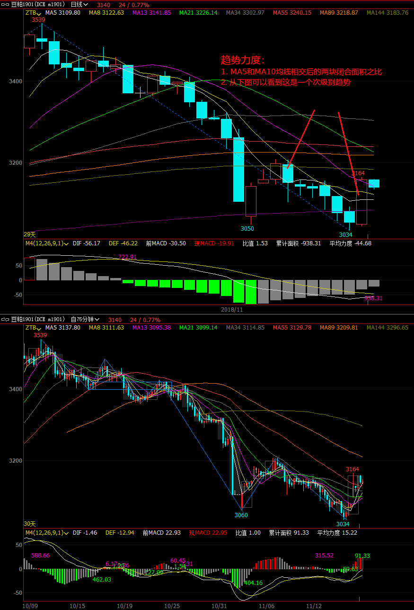

<!DOCTYPE html>
<html lang="en-US">
    <head>
        <meta charset="utf-8"> 
        <meta http-equiv="X-UA-Compatible" content="IE=edge">
        <meta name="viewport" content="width=device-width, initial-scale=1.0">
        <meta name="author" content="Walter" />
        <meta name="copyright" content="Walter" />

        <meta property="og:type" content="article" />
        <meta name="twitter:card" content="summary">

<meta name="keywords" content="缠论, stock, Fut&Stock, " />

<meta property="og:title" content="趋势与趋势力度 "/>
<meta property="og:url" content="./qu-shi-yu-qu-shi-li-du.html" />
<meta property="og:description" content="趋势：包含两个中枢；盘整包含一个中枢； 趋势力度：快线(MA5)和慢线(MA10)交叉之后的形成的面积对比 没有趋势，不谈趋势力度，所以在横盘是的均线缠绕谈不上趋势，也就谈不上趋势力度； 日线图上出现的趋势力度，是次级别一下的趋势对比；" />
<meta property="og:site_name" content="Just MEMO" />
<meta property="og:article:author" content="Walter" />
<meta property="og:article:published_time" content="2018-11-18T09:35:04+08:00" />
<meta property="og:article:modified_time" content="2018-11-18T09:35:04+08:00" />
<meta name="twitter:title" content="趋势与趋势力度 ">
<meta name="twitter:description" content="趋势：包含两个中枢；盘整包含一个中枢； 趋势力度：快线(MA5)和慢线(MA10)交叉之后的形成的面积对比 没有趋势，不谈趋势力度，所以在横盘是的均线缠绕谈不上趋势，也就谈不上趋势力度； 日线图上出现的趋势力度，是次级别一下的趋势对比；">

        <title>趋势与趋势力度  · Just MEMO
</title>
        <link href="//netdna.bootstrapcdn.com/twitter-bootstrap/2.3.2/css/bootstrap-combined.min.css" rel="stylesheet">
        <link href="//netdna.bootstrapcdn.com/font-awesome/4.0.1/css/font-awesome.css" rel="stylesheet">
        <link rel="stylesheet" type="text/css" href="./theme/css/pygments.css" media="screen">
        <link rel="stylesheet" type="text/css" href="./theme/tipuesearch/tipuesearch.css" media="screen">
        <link rel="stylesheet" type="text/css" href="./theme/css/elegant.css" media="screen">
        <link rel="stylesheet" type="text/css" href="./theme/css/custom.css" media="screen">


    </head>
    <body>
        <div id="content-sans-footer">
        <div class="navbar navbar-static-top">
            <div class="navbar-inner">
                <div class="container-fluid">
                    <a class="btn btn-navbar" data-toggle="collapse" data-target=".nav-collapse">
                        <span class="icon-bar"></span>
                        <span class="icon-bar"></span>
                        <span class="icon-bar"></span>
                    </a>
                    <a class="brand" href="./"><span class=site-name>Just MEMO</span></a>
                    <div class="nav-collapse collapse">
                        <ul class="nav pull-right top-menu">
                            <li ><a href=".">Home</a></li>
                            <li ><a href="./categories.html">Categories</a></li>
                            <li ><a href="./tags.html">Tags</a></li>
                            <li ><a href="./archives.html">Archives</a></li>
                            <li><form class="navbar-search" action="./search.html" onsubmit="return validateForm(this.elements['q'].value);"> <input type="text" class="search-query" placeholder="Search" name="q" id="tipue_search_input"></form></li>
                        </ul>
                    </div>
                </div>
            </div>
        </div>
        <div class="container-fluid">
            <div class="row-fluid">
                <div class="span1"></div>
                <div class="span10">
<article>
<div class="row-fluid">
    <header class="page-header span10 offset2">
    <h1><a href="./qu-shi-yu-qu-shi-li-du.html"> 趋势与趋势力度  </a></h1>
    </header>
</div>

<div class="row-fluid">
        <div class="span8 offset2 article-content">

            
            <ol>
<li>趋势：包含两个中枢；盘整包含一个中枢；</li>
<li>趋势力度：快线(<span class="caps">MA5</span>)和慢线(<span class="caps">MA10</span>)交叉之后的形成的面积对比<ol>
<li>没有趋势，不谈趋势力度，所以在横盘是的均线缠绕谈不上趋势，也就谈不上趋势力度；</li>
<li>日线图上出现的趋势力度，是次级别一下的趋势对比；</li>
</ol>
</li>
</ol>
<p><a href="./images/stock/qvshilidu.png"></a></p>
            
            
            <hr/>
<section>
    <h2>Related Posts</h2>
<ul class="related-posts-list">
<li><a href="./chan-lun-zong-jie.html" title="缠论总结">缠论总结</a></li>
<li><a href="./chan-lun-di-san-bian.html" title="缠论第三遍">缠论第三遍</a></li>
<li><a href="./da-xiao-ji-bie-zhong-die-de-li-jie-he-cao-zuo-si-lu.html" title="大小级别重叠的理解和操作思路">大小级别重叠的理解和操作思路</a></li>
<li><a href="./san-mai-zong-jie.html" title="三买总结">三买总结</a></li>
<li><a href="./ji-bie.html" title="级别">级别</a></li>
</ul>
<hr />
</section>
        </div>
        <section>
        <div class="span2" style="float:right;font-size:0.9em;">
            <h4>Published</h4>
            <time pubdate="pubdate" datetime="2018-11-18T09:35:04+08:00">Nov 18, 2018</time>

<h4>Last Updated</h4>
<time datetime="2018-11-18T09:35:04+08:00">Nov 18, 2018</time>

            <h4>Category</h4>
            <a class="category-link" href="./categories.html#futstock-ref">Fut&Stock</a>
            <h4>Tags</h4>
            <ul class="list-of-tags tags-in-article">
                <li><a href="./tags.html#chan-lun-ref">缠论
                    <span>6</span>
</a></li>
                <li><a href="./tags.html#stock-ref">stock
                    <span>23</span>
</a></li>
            </ul>
<h4>Contact</h4>
    <a href="https://slashdot.org/" title="My IT新闻Slashdot Profile" class="sidebar-social-links" target="_blank">
    <i class="fa fa-it新闻slashdot sidebar-social-links"></i></a>
        </div>
        </section>
</div>
</article>
                </div>
                <div class="span1"></div>
            </div>
        </div>
        <div id="push"></div>
    </div>
<footer>
<div id="footer">
    <ul class="footer-content">
        <li class="elegant-power">Powered by <a href="http://getpelican.com/" title="Pelican Home Page">Pelican</a>. Theme: <a href="https://github.com/Pelican-Elegant/elegant/" title="Theme Elegant Home Page">Elegant</a></li>
    </ul>
</div>
</footer>            <script src="http://code.jquery.com/jquery.min.js"></script>
        <script src="//netdna.bootstrapcdn.com/twitter-bootstrap/2.3.2/js/bootstrap.min.js"></script>
        <script>
            function validateForm(query)
            {
                return (query.length > 0);
            }
        </script>

    
    </body>
    <!-- Theme: Elegant built for Pelican
    License : MIT -->
</html>